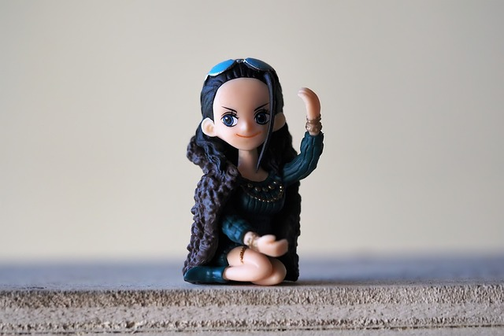
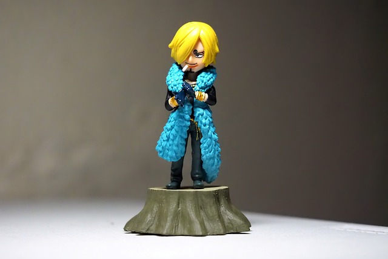

1. Ronoroa Zoro |
|---|
 |
|
Roronoa Zoro juga dikenal sebagai "Pemburu Bajak Laut" Zoro adalah seorang bajak laut dan ahli pedang dari kelompok Bajak Laut Topi Jerami dan merupakan salah satu karakter utama dalam cerita One Piece. Ia adalah orang pertama yang ditawari Monkey D. Luffy untuk bergabung dengannya. Impiannya adalah menjadi pendekar pedang nomor satu di dunia dengan mengalahkan Shichibukai Dracule Mihawk. Zoro termasuk ke dalam generasi bajak laut yang dilabeli sebagai "Sebelas Supernova". |
2. Nico Robin |
|---|
|  |
|
Nico Robin adalah mantan Baroque Works yang bergabung menjadi anggota kru ketujuh kelompok Bajak Laut Topi Jerami. Ia seorang arkeolog dari pulau Ohara, dan menjadi buronan pemerintah sejak berumur 8 tahun berkat kemampuannya membaca poneglyph dengan bounty sebesar 79.000.000 berry. Impian terbesar dalam hidup Robin yakni menemukan Rio Poneglyph yang mencatat "Sejarah Sebenarnya" dari masa yang hilang. |
3. Sanji |
|---|
|  |
|
Sanji adalah seorang bajak laut merangkap koki dari kelompok Bajak Laut Topi Jerami. Ia merupakan anggota kelima yang bergabung menjadi anggota kru saat kru topi jerami berlabuh di restoran terapung Baratie. Impian Sanji adalah untuk dapat menemukan "All Blue", sebuah lautan dimana East Blue, West Blue, North Blue dan South Blue saling bertemu dan menghasilkan bahan-bahan masakan terbaik yang merupakan surga bagi para koki. |
Herlinda Elvinta Bawenti - Universitas Gunadarma